차카데미
마법학교 차카데미아에 입학하여 마법을 발견하고 학교에 기증하며, 무너져가는 마법학교를 재건하세요. 생활과 탐험을 통해 마법을 배우고 클래스를 한 단계씩 성장시킬 수 있습니다.
📖 서버 스토리
“전설적인 대마법사였던 내가... 기절한 뒤 눈을 떠보니 무너져가는 마법학교의 초짜 견습마법사?!”
폐교 직전의 위기에 처한 마법학교 차카데미아를 구하고, 최고 마법사의 명예를 되찾으세요!
🧭 위키 이용 안내
왼쪽 메뉴에서 확인하고 싶은 항목을 선택하세요.
✨ 주요 콘텐츠
마법을 발견하고, 탐험하고, 성장하며 차카데미아의 비밀을 밝혀보세요.
🔮 마법 발견
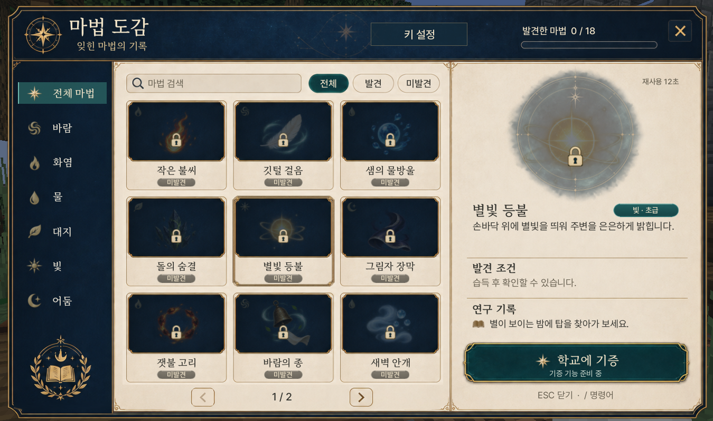
마법수업을 듣거나 정해진 행동을 하면 새로운 마법을 습득할 수 있습니다.
바람 · 화염 · 물 · 대지 · 빛 · 어둠, 6개의 속성으로 총 300종류의 마법이 존재합니다. 마법을 배우기 전에는 습득 조건을 알 수 없으므로 모험을 통해 직접 알아가야 합니다.
최대 6개의 마법을 단축키에 등록하여 바로 사용할 수 있습니다.
차카데미아에는 3명의 마법 교수님이 있습니다.
- 춘봉 교수 — 화염 · 물 마법
- 마두 교수 — 바람 · 대지 마법
- 견자희 교수 — 빛 · 어둠 마법
🏰 마법 기증과 기숙사
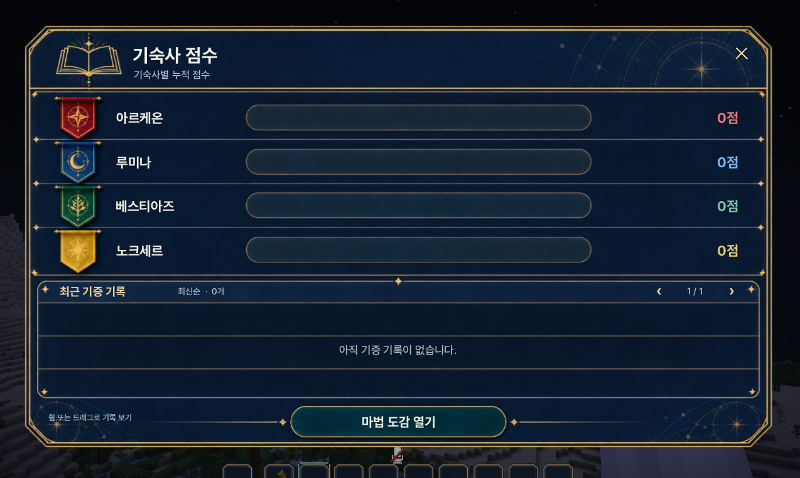
마법을 최초로 발견한 플레이어는 학교에 마법을 기증하여 자신의 이름을 남길 수 있습니다. 최초 발견한 마법을 학교에 기증하면 기숙사 점수가 올라가며, 점수에 따라 좋은 일이 생길 수도 있습니다.
서버에 접속하면 아래 4개 기숙사 중 한 곳에 무작위로 배정됩니다. 각 기숙사에는 대표가 있습니다.
| 기숙사 | 대표 |
|---|---|
| 🦁 아르케온 | 강만식 |
| 🌙 루미나 | 중력 |
| 🐾 베스티아즈 | 챈나 |
| 🌑 노크세르 | 조디악 |
🪄 캐릭터와 장비 성장
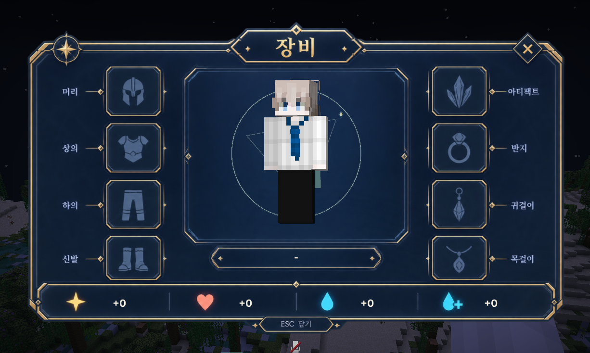
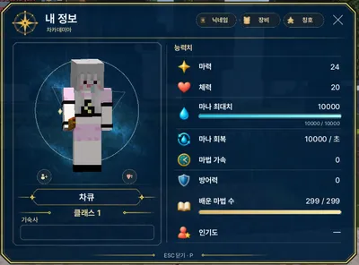
장비 창에서 방어구, 아티팩트, 장신구를 장착할 수 있습니다. 지팡이와 장신구는 마력코어를 통해 강화할 수 있으며, 장비는 체력과 마력 등 기본 능력치를 향상시켜 줍니다.
향상된 능력치는 스탯창에서 확인할 수 있습니다. 장비를 강화해 캐릭터를 성장시키면 더 고차원의 마법을 사용하고 더 빠르게 시전할 수 있습니다.
승급 조건을 만족하면 클래스가 올라갑니다. 서클이 높아질수록 캐릭터 주변의 별과 마법진이 변화해 성장 단계를 시각적으로 확인할 수 있습니다.
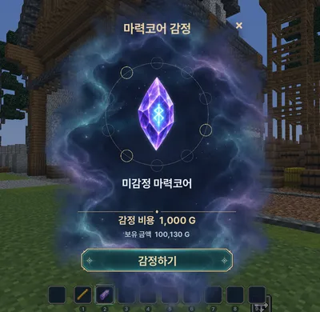
마력코어를 감정하면 1~9서클의 마력코어를 얻을 수 있으며, 이를 지팡이 강화에 활용합니다. 강화에는 최대 강화 횟수가 있으며, 시도할 때마다 1회씩 차감됩니다.
API로 획득할 수 있는 강화초기화권 · 강화횟수복구권 · 능력치변경권을 활용하면 강화에 도움을 받을 수 있습니다.
마력코어는 강화실패 시 사라집니다.
🌲 야생 탐험과 던전
야생을 탐험하다 보면 던전을 발견할 수 있습니다. 배운 마법으로 기믹을 해결하거나 보스를 공략하며 탐험과 전투를 함께 즐겨보세요. 더 상위 마법을 얻기 위한 기믹형 던전과 보스 던전으로 나뉘어 있습니다. 일반적인 마인크래프트에는 없는 바이옴도 있어 새로운 환경을 경험할 수 있습니다.
📢 던전은 서버 오픈 시점에 제공되지 않으며, 추후 업데이트를 통해 추가될 예정입니다.
🤝 커뮤니티
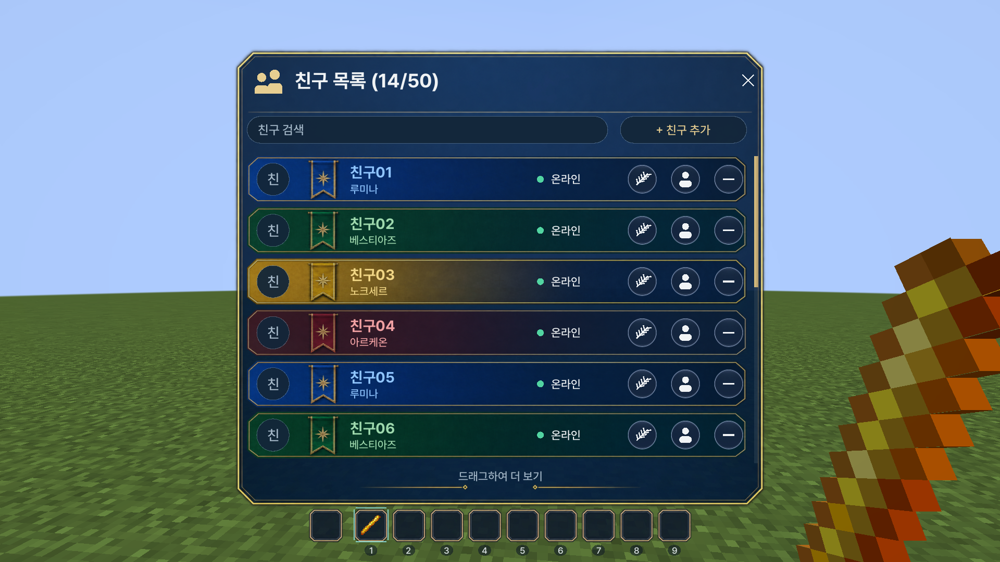
최대 50명의 친구를 등록할 수 있습니다. 바람의 전언으로 귓속말을 보내거나 서로의 정보를 확인하고 인기도를 올려줄 수 있습니다.
인기도는 기본적으로 하루 1회만 누를 수 있지만, API로 획득 가능한 인기도 제한 해제권을 사용하면 추가로 누를 수 있습니다. 파티를 결성하면 던전 등을 더욱 수월하게 공략할 수 있습니다.
🐾 펫과 치장품 수집
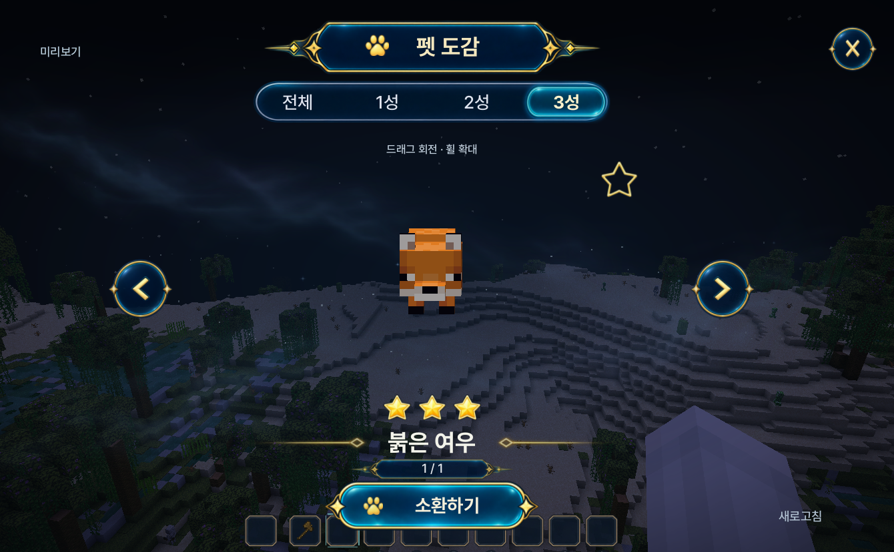
펫을 수집하거나 치장품을 획득해 캐릭터를 꾸미고 다양한 수집 목표에 도전할 수 있습니다. 펫은 1성~3성까지 존재합니다.
모험 중 만난 펫은 교화 마법을 통해 습득할 수 있습니다. 포켓몬의 이로치처럼 색이 다른 동물도 존재합니다.
펫을 교화할때 최대 체력이 오르고 2,3성펫은 추가 능력치를 제공합니다.
🧹 큐디치
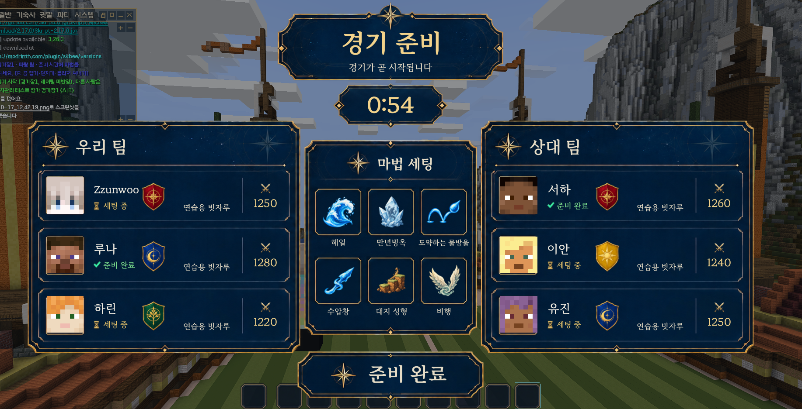
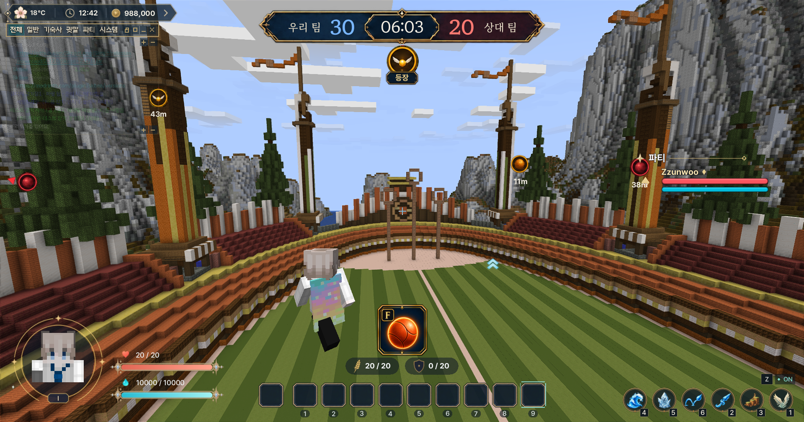
3명이 한 팀을 이루어 빗자루를 타고 골을 넣는 게임입니다. 습득한 마법을 활용할 수 있으며, 마법과 팀 조합에 따라 경기 전략이 달라집니다. 경기 중에도 핑을 통해 팀원과 소통할 수 있습니다.
⚔️ 1:1 대전
마법을 사용해 배틀을 펼치고 결과에 따라 랭킹이 매겨집니다. 레이팅 점수에 따라 브론즈부터 챌린저까지 등급이 나뉩니다.
📜 퀘스트
퀘스트를 수주하고 해결하여 다양한 보상을 받을 수 있습니다.
🌾 생활 시스템
농사, 낚시, 광질 등을 통해 재화를 얻을 수 있습니다.
- 농사: 농사를 짓다 보면 일정 확률로 작물이 생명을 얻어 도망다닙니다.
- 낚시: 낚시 미니게임이 있으며, 잡은 물고기로 도감을 해금하거나 아공간 수조에 담을 수 있습니다.
- 아공간 수조: ‘수조 통발’ 마법을 사용하면 아공간 수조를 확인할 수 있습니다.
생활 콘텐츠로 얻은 재화는 캐릭터 성장이나 재료 수급에 활용할 수 있습니다.
🐉 필드보스
야생을 돌아다니다 보면 마법생물이 등장합니다. 해당 생물들을 처치하면 보상을 획득할 수 있습니다.
📚 시스템 안내
차카데미아에서 이용할 수 있는 주요 시스템을 소개합니다.
🍂 계절 시스템
4가지 계절이 존재하며, 계절에 맞는 활동과 이벤트를 즐길 수 있습니다. 계절마다 달라지는 콘텐츠와 보상이 있으며 긍정적인 현상과 부정적인 현상이 모두 발생합니다.
📖 도감 시스템
마법, 펫, 아티팩트 등을 수집하고 도감을 채울 수 있습니다.
🏅 칭호 시스템
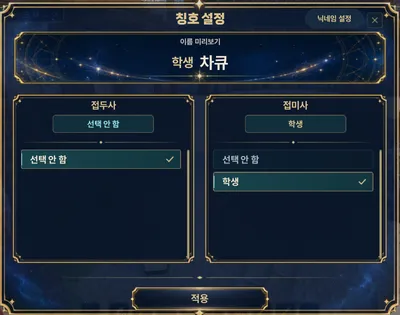
다양한 칭호를 획득하고 장착해 자신을 표현할 수 있습니다.
⚒️ 강화 시스템
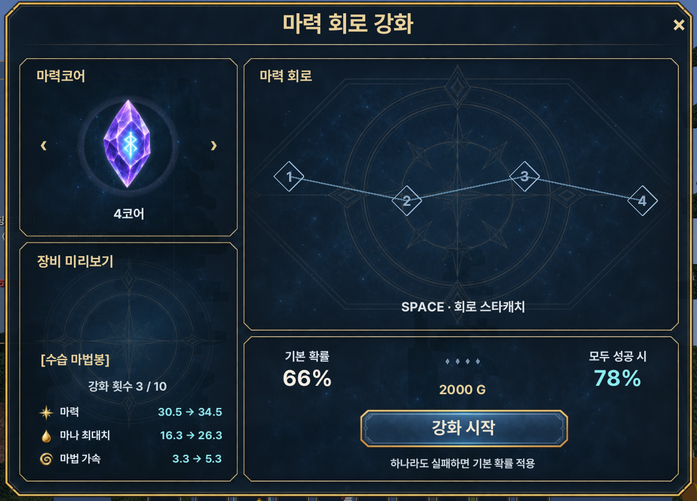
마력코어를 활용해 지팡이와 장신구를 강화할 수 있습니다. 스타캐치를 모두 성공하면 강화 확률에 보너스가 붙습니다.
🛏️ 하우징 시스템
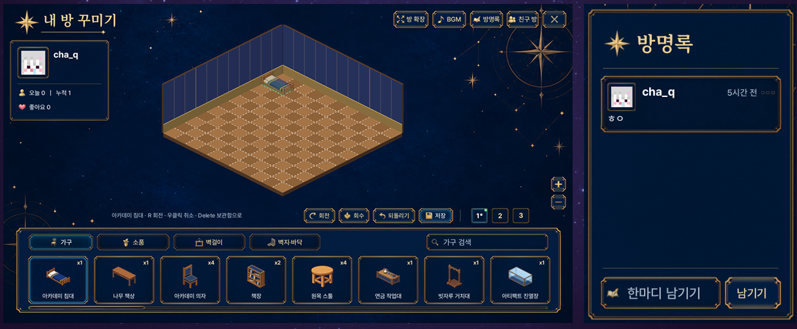
기숙사에서 자신의 방을 꾸밀 수 있습니다. 가구와 소품을 배치하고 다른 유저의 방을 구경하거나 방명록을 남길 수 있습니다.
⚗️ 연금술 시스템
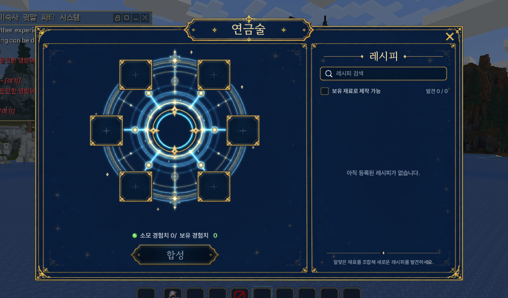
마인크래프트 바닐라 경험치를 사용해 연금술을 할 수 있습니다. 레시피를 직접 찾아야 하며, 일부 레시피를 맞히면 힌트가 제공됩니다. 연금술로 물약이나 아티팩트 등 다양한 아이템을 제작할 수 있습니다.
💗 NPC 미연시 시스템
NPC와 대화하거나 선물을 통해 호감도를 올려보세요.
호감도에 따라 퀘스트를 받거나, 마법 힌트를 받아 볼 수도 있습니다.
🎁 API 보상
api 도전미션은 오차범위 5%가 적용됩니다! 10,000개 수령시 즉사 처리
👤 유저 API
| API 누적 | 보상 |
|---|---|
| 100 / 1,000개 | 마법상자 1 / 11개 |
| 500 / 5,000개 | 고급마법상자 1 / 11개 |
| 10,000개 | 💀 즉사 + 전체 유저 고급마법상자 1개 지급 |
👑 섭주 API
| API 누적 | 보상 |
|---|---|
| 222개 | 접속 인원 전체에게 마법상자 1개 지급 |
| 300개 | 100칸 뽑기판 (전설빗자루, 초대권 획득 가능) |
| 500개 | 접속 인원 전체에게 고급마법상자 1개 지급 |
📦 마법상자 내용물
- 귀환권
- 인벤세이브
- 리턴권
- 텔포권
- 재화주머니
- 인기도 제한 해제권
- 체력 물약
- 마나 물약
- 던전 입장권
- 마법힌트권
- 강화초기화권
- 강화횟수복구권
- 호감도 선물
- 낚시용품 뽑기권
- 가구뽑기권
- 셜커상자
- 마력코어
- 청크소유권
💎 고급마법상자 내용물
- 귀환권 ×5
- 인벤세이브 ×5
- 리턴권 ×5
- 텔포권 ×5
- 초대권
- 재화주머니 ×5
- 인기도 제한 해제권
- 체력물약 ×5
- 마나물약 ×5
- 던전입장권 ×3
- 마법힌트권
- 청크소유권
- 컷신 변경권
- 강화초기화권
- 강화횟수복구권
- 능력치변경권
- 몬스터전리품뽑기권
- 변색종(이로치) 변경권
- 호감도 선물 ×3
- 마력코어 ×3
- 아티팩트 열쇠
🧪 아이템 설명
API 보상 등으로 획득할 수 있는 주요 아이템의 기능입니다.
| 아이템 | 설명 |
|---|---|
| 🏠 귀환권 | 로비로 즉시 귀환시켜주는 아이템입니다. |
| 🛡️ 인벤세이브 | 사망 시 인벤토리를 보호해주는 아이템입니다. |
| ↩️ 리턴권 | 마지막 사망 좌표로 텔레포트시켜주는 아이템입니다. |
| 🌀 텔포권 | 다른 사람의 위치로 텔레포트시켜주는 아이템입니다. |
| ✉️ 초대권 | 원하는 스트리머를 마법학교에 초대시켜주는 아이템입니다. |
| 💗 인기도 제한 해제권 | 하루 1회로 제한된 인기도 누르기 횟수를 초기화시켜주는 아이템입니다. |
| 🚪 던전 입장권 | 던전에 입장하게 해주는 아이템입니다. |
| 💡 마법 힌트권 | 아직 배우지 않은 마법의 습득 방법에 대한 힌트를 제공합니다. |
| 🔄 강화초기화권 | 강화 횟수와 강화로 상승한 능력치를 초기화합니다. |
| 🔧 강화횟수복구권 | 실패한 강화 횟수를 복구시켜주는 아이템입니다. |
| 🔮 능력치변경권 | 코어의 성향을 변경시킵니다. 코어 개수와 상승량은 유지됩니다. |
| 💝 호감도 선물 | NPC와의 미연시에 활용할 수 있는 호감도 선물을 획득합니다. |
| 🎣 낚시용품 뽑기권 | 낚시용품을 획득할 수 있습니다. |
| 🪑 가구뽑기권 | 가구를 획득할 수 있습니다. |
| 💀 몬스터전리품뽑기권 | 몬스터 전리품을 획득할 수 있습니다. |
| ✨ 마력코어 | 감정 후 강화 재료로 활용됩니다. |
| 🌱 청크소유권 | 야생의 청크 1개를 소유할 수 있습니다. 농사는 최대 1청크에서만 가능합니다. |
| 🎬 컷신 변경권 | 자신의 컷신을 현재 스킨에 맞게 다시 변경할 수 있습니다. |
| 🌈 변색종(이로치) 변경권 | 교화시킨 펫을 변색종으로 변경할 수 있습니다. |
| 🗝️ 아티팩트 열쇠 | 아티팩트를 무작위로 1개 획득할 수 있습니다. |
| 🎒 가방 확장권 | 아공간 배낭을 활용할 수 있습니다. |
📜 서버 규칙
모두가 즐겁게 방송하고 플레이할 수 있도록 아래 규칙을 지켜주세요.
🤝 플레이어 간 매너
⛏️ 플레이 및 시스템 제한
🏗️ 건축 및 기타 안내
🌱 농사 제한 예시
같이 사는 인원이서 최대 6청크로 3층 농사가 가능하며, 땅 주인 + 화리인원 총 6명까지로 인원제한이 있습니다.
🛠️ 패치노트
차카데미의 날짜별 업데이트 기록입니다. 날짜별로 새 기능, 변경 사항, 오류 수정을 확인하세요.
🎃 10월 31일 패치노트
해피 할로윈 이벤트와 3인 파티 던전이 추가되며, 교화·펫·연금술·퀘스트 및 다양한 편의 기능이 개선됩니다.
🎃 해피 할로윈
- 저녁 6시, 차카데미아에 할로윈이 찾아옵니다.
- 이벤트 중에만 진행할 수 있는 특수 퀘스트를 즐기고, 한정 할로윈 마법을 획득해보세요.
- 할로윈 이벤트 NPC가 추가됩니다.
🗝️ 던전
- 3인 파티 던전이 추가됩니다. 파티장이 입장을 누르면 파티원 모두가 수락해야 출발합니다.
- 파티 던전에서 쓰러지면 관전 상태가 되며, 파티원이 모두 쓰러지면 도전에 실패합니다.
- 파티 던전 도중 나가거나 접속이 끊긴 파티원은 마을로 돌아가며, 남은 파티원은 계속 도전할 수 있습니다.
- 파티 던전에서는
Ctrl키로 파티원에게 핑을 찍을 수 있습니다. - 마지막 보스를 처치하면 보상이 보스가 쓰러진 자리에 떨어지며, 최초 클리어 보상은 우편함으로 지급됩니다.
- 보스 처치 후 출구 포탈이 열리며, 30초가 지나면 자동으로 마을로 이동됩니다.
- 던전 구역을 벗어난 상태로 5초가 지나면 던전이 자동으로 종료됩니다.
- 던전 몬스터가 벽에 끼어 소환되던 문제가 수정됩니다.
- 던전 보스가 1% 확률로 이로치(특별한 색)로 등장합니다.
- 던전 보스 몬스터가 교화 가능 목록에 추가됩니다.
🐾 교화 · 펫
- 보스 몬스터(가디언 · 엘더 가디언 · 엔더 드래곤 · 위더 · 워든 · 무덤의 대현자 모르바스 · ????)의 교화 확률이 1%로 조정됩니다.
- 보스가 교화 가능한 봉인 상태가 되면 홀로그램 큐브 연출이 표시됩니다.
- 펜리르 · 독시 · 고블린이 야생에서 교화되지 않던 문제가 수정됩니다.
- 펫 도감에서 아직 얻지 못한 펫이 잠김으로 표시되며, 펫 설명에 서식지가 표시됩니다.
🌈 이로치
- 야생 몬스터와 일반 몬스터의 이로치 등장 확률이 1/1000로 조정됩니다.
⚗️ 연금술 대개편
- 몬스터를 처치하면 일정 확률로 연금 쪽지를 얻을 수 있습니다.
- 쪽지를 읽으면 아직 발견하지 못한 조합식의 힌트를 알려줍니다.
- 연금술 창에 연금 수첩이 추가되어 모은 쪽지를 다시 볼 수 있습니다.
- 틀린 조합을 넣었을 때 정답에 얼마나 가까운지 단계별 문구로 알려줍니다.
- 일부 조합식은 서버에서 처음 발견한 사람에게 칭호가 지급되고 전체 공지가 나갑니다.
- 연금술로 만든 장비가 기본 아이템으로 나오던 문제가 수정됩니다.
- 장비창에서 아이템 이름이 “종이”로 보이던 문제가 수정됩니다.
- 재료 이름이 영어로 나오던 아이템이 한글 이름으로 표시됩니다.
- 마력 코어를 제외한 조합식이 전체 삭제되고, 새로운 조합식이 추가됩니다.
📜 의뢰 · 스토리
- 받은 의뢰가 화면의 퀘스트창 아래에 진행도와 함께 표시됩니다.
- 야생 · 아레나에서도 스토리 퀘스트 진행도가 실시간으로 표시됩니다.
- 「100년 전 몬스터에 관한 기록」 단계에서 진행이 막히던 문제가 수정됩니다. 해당 단계에서 책을 다시 읽으면 진행됩니다.
/전리품에 몬스터가 실제로 나타나는 지역이 더 정확하게 표시됩니다.
🧰 편의 · 기타
- 친구를 최대 100명까지 등록할 수 있습니다.
- 계절 예보 마법을 사용하면 다음 계절로 넘어갑니다. (재사용 대기시간 1시간)
- 교배 · 알 · 양동이 등으로 생긴 몬스터는 전리품을 떨어뜨리지 않습니다.
⚔️ 큐디치 · 결투
- 관전 중에는 피해를 받지 않으며, 관전 중 사망해도 아이템을 잃지 않습니다.
- 관전 중에도
Ctrl키를 눌러 나가기 버튼을 누를 수 있습니다.
🎣 낚시
- 특정 지형을 만들어 비싼 물고기만 계속 낚을 수 있던 문제가 수정됩니다.
✨ 마법 오류 수정 · 조정
- 원소 반응과 상태 이상 표시가 커스텀 몬스터에게도 보이도록 수정됩니다.
- 빙결 지대에 맞아도 밀려나지 않도록 수정됩니다.
- 레비아탄: 시전 시간이 1.5초로 줄어들며, 시전 중 움직여도 취소되지 않습니다.
- 월식의 눈: 시전 시간이 2.5초로 줄어듭니다.
✨ 10월 30일 추가 패치 안내
마나 회복 방식과 던전 밸런스를 조정하고, 2장 스토리 및 투사체 마법 관련 오류를 수정했습니다.
💧 마나
- 기본 마나 회복량이 고정 8에서 최대 마나의 5%로 변경됩니다. (기본 최대 마나 300 기준 15)
- 최대 마나가 증가하면 마나 회복량도 함께 증가합니다.
☠️ 던전: 리치의 지하 연구실
- 보스 ‘모르바스’: 체력이 4000에서 3000으로 감소합니다.
- 보스 ‘모르바스’: 이동 속도와 공격력이 상향됩니다.
- 망자 병사: 이동 속도가 상향됩니다.
📖 2장 스토리
- 그레고르의 조사 샘플 퀘스트에서 전리품을 떨어뜨리는 몬스터의 이름이 함께 표시됩니다.
- 퀘스트 설명에
/전리품 <이름>명령어 안내가 추가됩니다. - 요구하는 전리품에 지나치게 희귀한 전리품이 등장하지 않도록 변경됩니다.
✨ 마법 오류 수정
- 투사체 마법이 커스텀 몬스터를 맞혀도 피해가 들어가지 않던 문제가 수정됩니다.
✨ 10월 30일 패치 안내
2장 스토리와 신규 콘텐츠가 추가되었으며, 마법·생활 시스템 및 각종 오류를 개선했습니다.
🆕 새 콘텐츠
- 2장 스토리: 2장 이야기가 추가됩니다. 2장 스토리는 오후 7시에 오픈됩니다.
- 던전: 리치의 지하 연구실: 1인 던전이 추가됩니다. 2장 진행 중 입장할 수 있습니다.
- 큐디치: 아레나 1 큐디치 경기장이 열립니다.
- 펠릭스 장비 공방: 펠릭스에게 “장비 보러 왔어요” 대화가 추가되며, 장비 공방 상점이 열립니다.
- 랭킹:
/랭킹 지능,/랭킹 인기도명령어가 추가됩니다.
🔧 변경 사항
- 장신구: 장비창에서 장신구가 종이 모양으로 표시되던 문제가 수정됩니다.
- 마법 피격: 마법 간 피격 쿨타임이 제거되어 연속으로 적중하는 마법이 모두 피해를 줍니다.
- 연구일지: 연구일지가 없던 마법 84종에 연구일지가 추가됩니다.
- 상점: 상점 상단의 ‘전체’ 탭이 삭제됩니다.
- 낚시: 변경한 찌·줄·미끼를 장비 목록에서 기본 장비로 되돌릴 수 있습니다. 낚싯줄 설명은 실제로 내려가는 깊이로 표시됩니다.
- 땅: 땅 허용 명단은 최대 5명까지 등록할 수 있습니다. (땅 주인 포함 총 6명)
- 모닥불: 모닥불에 음식을 올릴 수 있습니다. 음식 외 아이템은 기존처럼 올릴 수 없습니다.
- 잿불 덫: 동시에 설치할 수 있는 덫이 2개에서 1개로 변경됩니다.
- 연금술: 연금술을 통해 새로운 아이템을 제작할 수 있습니다.
🛠️ 시스템 수정
- 접이식 망원경이 사용 키를 누르고 있는 동안 확대되도록 수정됩니다.
- 커스텀 몹이 썩은 살점을 떨어뜨리던 문제가 수정됩니다.
- 되심기 손길로 작물을 빠르게 캐면 다시 심어지지 않던 문제가 수정됩니다.
- 운명의 실 습득 조건이 올라가지 않던 문제가 수정됩니다.
- 콘크리트 양생 습득 조건이 올라가지 않던 문제가 수정됩니다.
- 하늘의 눈에 맞은 유저가 로비로 튕기던 문제가 수정됩니다.
✨ 마법 오류 수정
- 미스틱 슈터 / 미라지 슈터: 슬롯에 등록하면 옆에 이펙트가 표시됩니다. 피해를 줄 때마다 화살이 대상에게 유도되어 날아가 추가 피해를 주며, 벽을 통과합니다. 화살 생성에는 0.5초의 내부 쿨타임이 적용됩니다.
- 대상 지정 마법 전체: 커스텀 몹(모델이 있는 몹)을 대상으로 조준할 수 없던 문제가 수정됩니다.
- 이펙트·피해 타이밍: 이펙트와 실제 피해가 들어가는 타이밍이 맞지 않던 마법 25종이 수정됩니다.
- 이펙트 표시: 마법 발사 후 남아 있던 이펙트가 정상적으로 사라집니다.
🎯 사거리 · 적중 개선
- 포효 도약 / 사냥 도약: 도약 거리가 늘어나 대상에게 닿도록 개선됩니다.
- 반달 바람날: 사거리가 10칸에서 13칸으로 늘어나 이펙트와 일치합니다.
- 퍼붓는 화살: 퍼지는 각도가 줄어 멀리서도 5발이 모두 적중합니다.
- 여우불 공전: 유도 성능이 향상되어 가까이에서도 3발이 모두 적중합니다.
- 되돌이 칼날: 돌아오는 칼날의 판정이 넓어져 한 번 더 적중시키기 쉬워집니다.
- 섬광 도약: 점프하지 않고 땅에서 사용해도 앞으로 이동합니다.
🪄 10월 29일 패치 안내
1:1 결투와 큐디치, 마법 및 마법봉 관련 오류를 수정하고 야생과 사냥 시스템을 개선했습니다.
⚔️ 1:1 결투 · 큐디치
- 결투가 끝난 뒤 아레나의 빈 평지에 남던 문제를 수정했습니다. 이제 경기에 참여한 모든 인원이 원래 있던 곳으로 돌아갑니다.
- 관전자가 있는 경기가 끝나면 선수와 관전자 모두 돌아가지 못하던 문제를 수정했습니다.
- 경기가 끝난 뒤 매칭 대기열이 동작하지 않던 문제를 수정했습니다.
- 비상용 명령어
/탈출이 추가되었습니다. 어디서든 매칭 상태를 정리하고 학교 스폰으로 이동합니다.
✨ 마법
- 뇌운 등 일부 마법이 사용되지 않거나 가끔 발동되지 않던 문제를 수정했습니다.
- 공포의 종 → 악몽 콤보가 발동되지 않던 문제를 수정했습니다.
- 빛의 감옥이 시전만 되고 효과가 들어가지 않던 문제를 수정했습니다.
- 대지성형이 한쪽 방향으로만 나가던 문제를 수정했습니다. 이제 바라보는 방향으로 나갑니다.
- 그놈 소환수가 보이지 않던 문제를 수정했습니다.
🪄 마법봉
- 마법봉을 한 번 손에 들면, 다른 아이템을 들어도 다음 마법봉을 들 때까지 능력치가 유지됩니다. 마나 물약을 쓸 수 없던 문제도 함께 해결됩니다.
- 마법봉을 처음 손에 든 사람이 주인이 되며, 주인에게만 능력치가 적용됩니다.
🐾 사냥 · 마법 발견
- 소환수와 펫이 처치한 몹도 퀘스트, 마법 발견 등 모든 처치 수에 포함됩니다.
- 불길씻기 마법 발견 조건이 달성되지 않던 문제를 수정했습니다.
- 물고기 가격이 상향되었습니다.
🌲 야생
- 일부 바이옴에서 야생 몹이 나오지 않던 문제를 수정했습니다. 이제 모든 바이옴에서 낮과 밤 모두 몹이 나옵니다.
- 모닥불에 아이템을 넣을 수 없도록 변경했습니다. 불을 붙이는 것은 그대로 가능합니다.
🛠️ 기타
- 엘레나 교수님의 대화 일러스트가 예전 그림과 섞여 나오던 문제를 수정했습니다.
- 이제부터 클라라의 조각공방에서 아티팩트 열쇠를 판매합니다.
- 피피의 잡화점에서 가구뽑기권과 호감도선물 뽑기권을 판매합니다.
- 브루노가 새로운 빗자루를 판매합니다.
🌙 10월 28일 23시 패치 안내
마력코어 강화 개편과 마법 오류 수정, 아레나 및 야생 기능 개선이 적용되었습니다.
🔮 마력코어 강화 개편
- 마력코어의 노드 수에 따라 강화 성공 시 능력치 상승량 차이가 커지도록 개편되었습니다. 노드가 많은 코어일수록 강화 성공 시 능력치가 더 많이 상승합니다.
- 개편 전에 강화한 마법봉에도 새 기준에 맞춘 추가 능력치가 지급됩니다. 해당 마법봉을 손에 들면 한 번 자동으로 반영되며, 알림이 표시됩니다.
- 노드가 1~2개인 코어로 강화한 수치는 낮아지지 않습니다.
🪄 마법 오류 수정
- 그림자 도약 등 일부 마법 29종이 “마법 명령이 연결되지 않았거나 실행에 실패했습니다”라는 문구와 함께 사용되지 않던 문제를 수정했습니다.
⚔️ 아레나
- 대기 중이나 결투 중에도 마법 모드를 켜고 끌 수 있습니다.
- 아레나에 입장하면 마법 모드가 켜진 상태로 시작합니다.
📜 퀘스트
- 하르바 교수님의 “야생동물 교화하기” 퀘스트가 야생에서 교화해도 완료되지 않던 문제를 수정했습니다.
- 이미 교화한 경우 하르바 교수님께 다시 말을 걸어 주세요.
- 세드릭 교수님, 베르나 교수님, 이솔데 교수님, 그레고르 교감 선생님에게도 “수업 받으러 왔어요” 버튼으로 수업을 받을 수 있습니다.
🌲 야생
- 야생 서버에 셜커 상자 기능이 추가되었습니다.
✨ 10월 28일 업데이트 안내
새로운 편의 기능과 스토리, 다양한 개선 사항이 추가되었습니다.
🆕 새 기능
- 지도 체크포인트: 지도(J)에서 Ctrl을 누른 채 클릭하거나 오른쪽 클릭하면 해당 위치에 이름을 붙여 체크포인트를 저장할 수 있습니다. 저장한 체크포인트를 같은 방법으로 누르면 삭제됩니다. 야생 지도 및 현재 접속한 서버의 지도에서만 만들 수 있습니다.
- 지도 파티원 표시: 같은 서버에 있는 파티원의 위치가 지도에 파란 원과 이름으로 표시됩니다.
- 땅 영역 표시: 내 땅 메뉴(H)의 ‘영역 표시’ 버튼을 켜면 땅문서를 들지 않아도 땅 경계가 계속 보입니다.
/땅보기명령어로도 켜고 끌 수 있습니다. - 낚싯대 수리:
/낚싯대수리명령어로 손에 든 낚싯대를 수리할 수 있습니다. 비용은 일반 1,000원, 고급 4,000원, 유일 20,000원, 전설 100,000원입니다. - 1장 추가 스토리: 하르바 교수 다음으로 세드릭 교수의 이야기가 이어집니다. 1:1 결투와 클래스 승급을 경험할 수 있습니다.
- 2장 안내: 2장은 10월 29일 오후 6시에 열립니다.
🔧 변경 사항
- 왼쪽 아래 초상화 아래에 등급(I, II) 대신 레벨이 표시됩니다.
- 세드릭, 하르바, 베르나, 이솔데 교수와 그레고르 교감 선생님에게서도 ‘수업 받으러 왔어요’ 버튼으로 수업을 받을 수 있습니다.
- 인기도, 마법 발견 기록, NPC 호감도가 이제 모든 서버에서 동일하게 적용됩니다.
- 마일리지 상점에서 묶음으로 등록된 물건은 묶음 개수대로 구매됩니다.
- 텔레포트권으로 네더나 엔드에 있는 친구에게도 이동할 수 있습니다.
- 광맥 파쇄, 넓게 캐기로 광물을 캘 때도 경험치가 지급됩니다.
- 1:1 결투(아레나)에서는 체력이 자동으로 회복되지 않으며, 배고픔은 항상 가득 찬 상태로 유지됩니다.
- 포션을 다시 사용할 수 있을 때까지 남은 시간이 알림으로 표시됩니다.
- 야생 스폰 지점이 있는 청크는 땅으로 소유할 수 없습니다.
- 가방 확장 시스템이 오류로 인해 삭제되었습니다.
🐛 오류 수정
- 투사체 마법이 맞는 모습은 보이지만 피해가 들어가지 않던 문제를 수정했습니다.
- 멀리서 쏘거나 움직이면서 쏠 때 조준이 어긋나던 문제도 함께 수정했습니다.
- 내 정보(I)에서 지팡이의 지능이 실제보다 낮게 보이던 문제를 수정했습니다.
- 야생에서 공간 도약을 사용할 수 없던 문제를 수정했습니다.
- 낚시 화면에서 기본 낚싯줄 길이가 15m가 아닌 12.8m로 보이던 문제를 수정했습니다.
- 서버를 옮기면 지도에 그려진 기록이 사라지던 문제를 수정했습니다.
- 마나 포션이 재사용 대기 중에도 계속 마셔지던 문제를 수정했습니다.
- 스토리를 끝까지 진행했던 플레이어도 새로 추가된 단계부터 이어서 진행할 수 있습니다.
🏰 차카데미아 오픈
차카데미아에 새로운 입학생들이 들어옵니다.